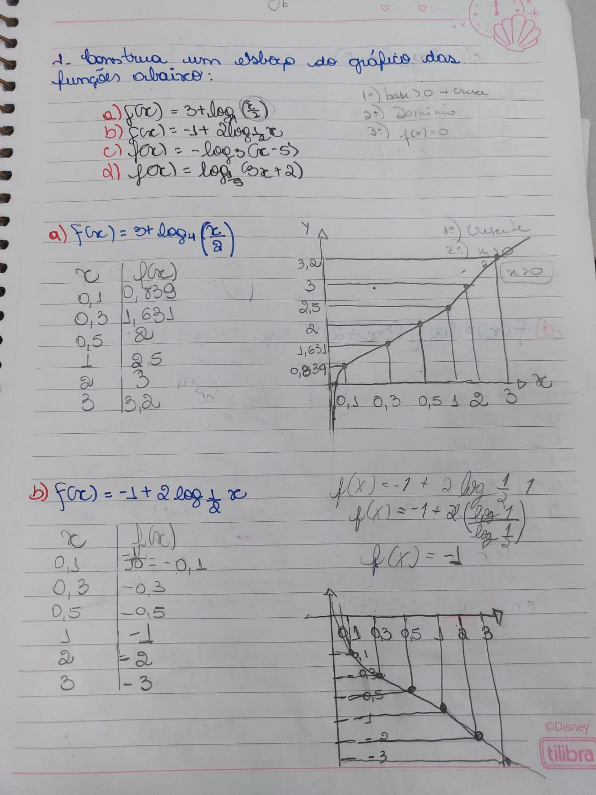
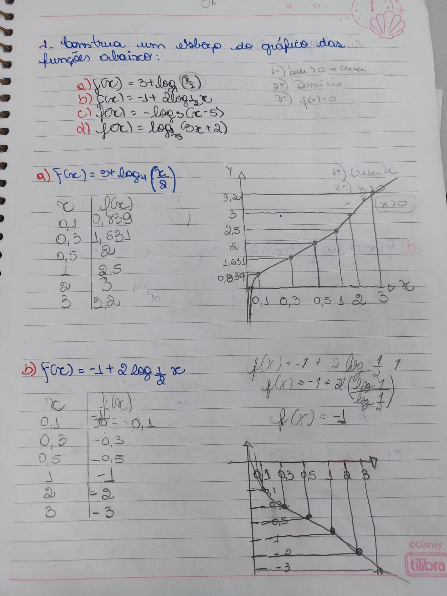
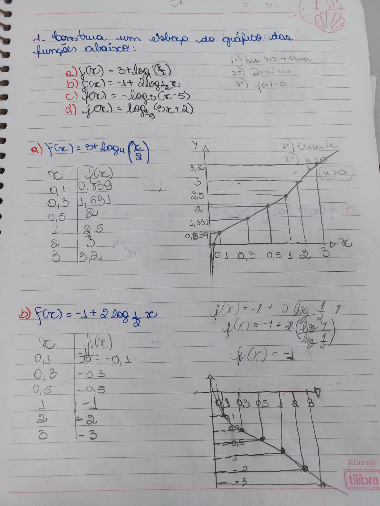

.jpeg) 

| Home | Logaritmos | Funções Logarítmicas | Matématica Finaceira | Cadastre-se em nosso EAD! | Contato | Auto-Avaliação |
Após o estudo dos logaritmos, trabalhamos as funções logaritmícas, conteúdo o qual tive dificuldade, principalmente no momento de aplicar as propriedade.
A função logarítmica é inversa a função exponencial. Por exemplo, enquanto uma função exponencial de base 2 leva 3 a 8, uma função logarítmica de base 2 leva 8 a 3. O domínio é D(f) = (0, + ∞) = ℝ^*+ e a imagem é Im(f) = ℝ
O gráfico de uma função logarítmica pode ser construído a partir da atribuição de valores a x na qual encontramos seus pares ordenados y. No entanto, é importante saber quais valores de x poderão ser atribuídos na função, tendo em vista as condições de existência dos logaritmos. Isso significa que é interessante estabelecer o domínio da função antes de construir seu gráfico. Da mesma forma, saber se a curva é crescente ou decrescente e quais as interseções dela com os eixos coordenados são importantes.
Para construir um gráfico, devemos:
𝒃 > 𝟏 → 𝑪𝒓𝒆𝒔𝒄𝒆𝒏𝒕e
𝟎 < 𝒃 < 𝟏 → 𝑫𝒆𝒄𝒓𝒆𝒔𝒄𝒆𝒏𝒕e.
IMPORTANTE recaptular que:
Para mais:
Algumas imagens do caderno:
